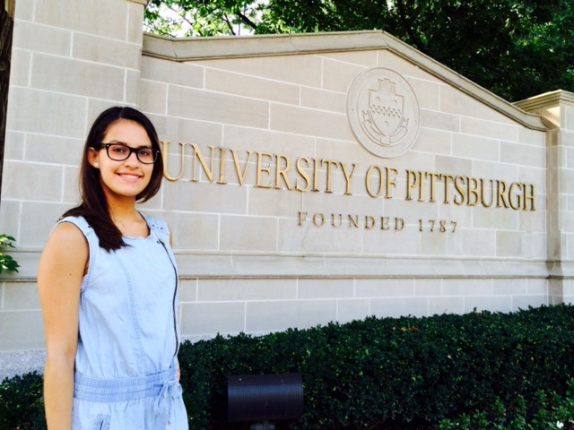

Here at Roc's, we make the best ice cream in the universe. Located on the roof of Benedum Hall at the University of Pittsburgh, we do not have many visitors during the winter but in the summer there is a line out the door (to the roof) to try our delectable treats.
We make deliveries of our treats across campus and throughout the city of Pittsburgh. A few of our valued customers include Chancellor Gallagher, Dean Bonner, Ray Kovacs, and Nathalia de Carvalho. We are also the official sponsor of the Penguins hockey team.
We have 8 employees here at Roc's, plus the owners, Angie and Roisin. Three employees are ice cream makers, two deliver treats, one is a cashier, one scoops ice cream, and one is in charge of marketing. Our employees are robots so they are able to work 24 hours a day, 7 days a week. This means that you can have Roc's Ice Cream anytime you want!
Our ice cream shop has been in business since 2006, so this year we are celebrating our 10th anniversary. Please help us celebrate by bringing all your friends and family to Roc's this summer to make this year our best year yet!
|  Angie Sandoval ans253@pitt.edu | Roisin O'Dowd rmo24@pitt.edu |